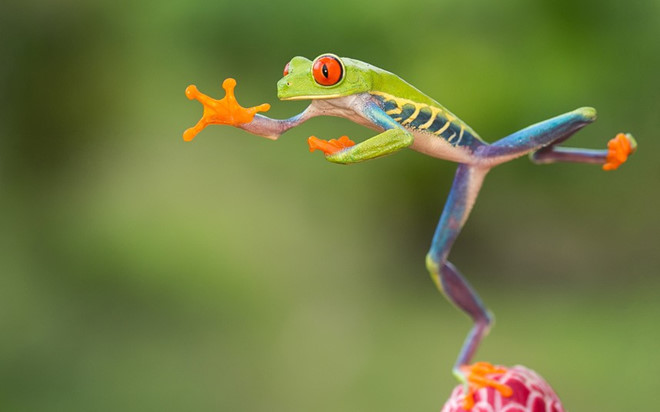
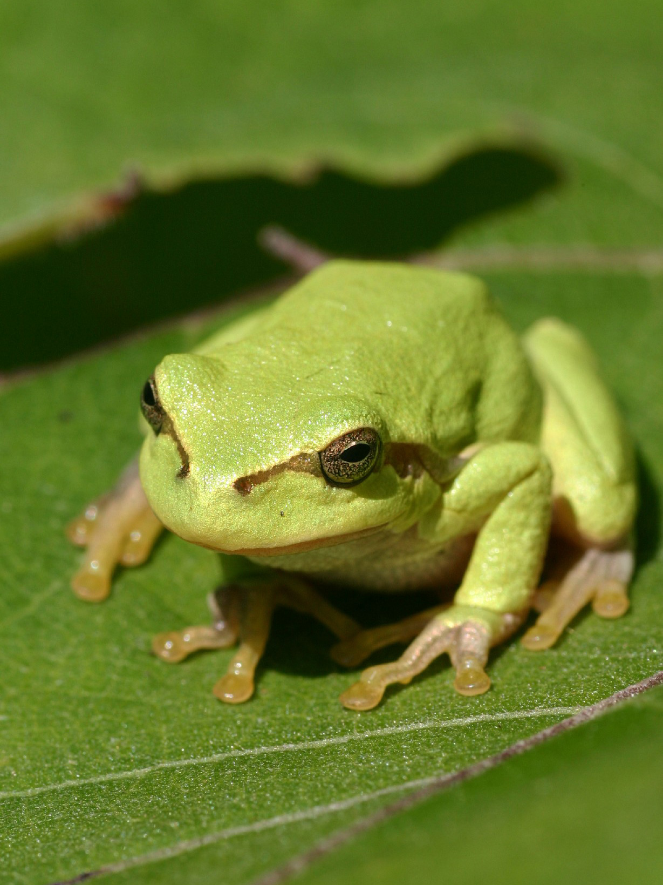

Family: Rhacophoridae, Set: Anura-free
The tree frog is quite large, with the length of the male body 58 - 79mm. The face and back are green or blue with white spots. The belly is bright yellow, with large black spots on the yellow background on either side of the armpit. The toes are fully webbed, the wide toes on the yellow background of the metatarsals (the membranes of the outer three toes) is black or dark purple. The webbed feet are large and the folds of skin on the arm are wide so that frogs can be thrown down from a tree. Pointy heels with pointed skin. The colors of males and females are the same.
This species is found in most forests in the midlands and mountains to an altitude of 1500m. Kio tree frogs' food is young worms, webbed wings, ants, which are prey available on trees. Kio tree frogs breed from the beginning of April until the end of August. The breeding time is concentrated in April - May (Buon Luoi), July - August (Ben En). On rainy nights, frogs gather around lakes on tree branches, often with twice as many males. In the dark, they would throw 3 - 5 meters high into the lake, join in pairs, the female piggyback the male to climb the branches along the lake and the other males also follow to form a group of 5-7 males mate with 1 female. Mating time is from 1 to 4 hours. Eggs are laid and inseminated always rolled in leaves to form 18 - 22cm long potholes hanging from the soil 0.5 - 1m. The tadpole grows in a foam nest and falls into the water.
Domestic: Lao Cai (Sa Pa), Phu Tho (Thanh Son, Xuan Son National Park), Thanh Hoa (Ben En), Ha Tinh (Huong Son), Quang Binh (Phong Nha - Ke Bang), Gia Lai ( Buon Luoi).World: China (Yunnan, Guangxi), Laos, Thailand.
The area of distribution is about < 5000 km2. Exists only in 5 points. Habitat is increasingly shrinking so the number of species is declining. The species is often traded as pets in Vietnam and internationally.
Helen the tree frog (Rhacophorus helenae scientific name) is a species of flying frog discovered in Vietnam and published in 2013, named after Helen M. Rowley, the mother of the person who discovered and described this species. This species lives in Binh Thuan and Dong Nai, from Nui Ong Nature Reserve, Binh Thuan province, to watershed protection forests in Thac Mai, Tan Phu and Dong Nai areas.
The species has a quite large size, the length of the male body is 72.3–85.5 mm, and the female is 89.4–90.7 mm. The face and back are green or blue with white spots. Yellowish belly, with large black spots on the yellow background on either side of the armpit. The toes are fully webbed, the toes are wide on the pale yellow background of the foot membranes (the membranes of the outer three toes) are black or dark purple. The webbed feet are large and the folds of skin on the arm are wide so that frogs can be thrown down from a tree. Pointy heels with pointed skin. The colors of the male and female are the same.Moroccan frog - Rhacophorus helenae is very similar to kio tree frog - Rhacophorus kio is distributed in Northern Vietnam. However, they have different characteristics for comparing DNA samples between the two species and external morphological characteristics such as the larger size, the lower part of the anus.
Living in low altitudes in evergreen forests and balancing at night during the rainy months where there are large puddles or small streams in the forest. Foraging and mating, laying eggs from June to August every year. Tadpoles are hatched in healthy egg sacs before falling into puddles. The species name was honored by the mother of Australian amphibian researcher, Dr. Rodi Lowley.Distribution:This species has a fairly wide distribution range, from Nui Ong Nature Reserve in Binh Thuan Province, to Tan Phu-Dong Nai Watershed Protection Forest.
8 Ton That Thuyet, My Dinh, Tu Liem,
Ha Noi, Viet Nam.
0966469746 (Do Van Huan)
0666729716 (Nguyen Minh Nghia)
0522697743 (Duong Thanh Binh)
0849818969 (Le Van Phuong)
0373485924 (Nguyen Thanh Lam)
KawasakiZoo@gmail.com